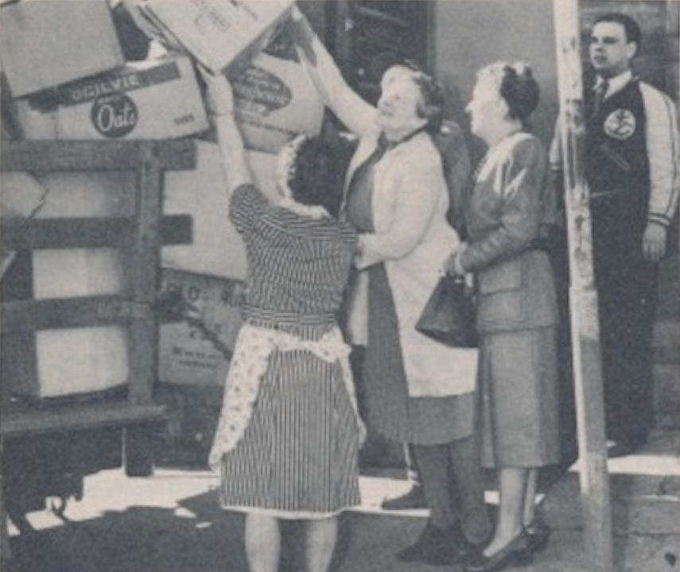

-1-MasterItem.svg)
Stories of Westminster United Church & its People / Page
119
Howse wrote to Lady Tweedsmuir (wife of John Buchan
— our Governor General at the time) and to Mrs. Vincent Massey,
wife of our High Commissioner to Britain for advice. Both agreed
about the need. Mrs. Massey suggested the way around the
problem. Send parcels personally to her at Canada House, London.
Government material took precedent, always. And parcels to
Mrs. Massey were Government material well above the legislation!
Mrs. McIntyre and the women of Westminster packed and
shipped a ton and a half of clothing in Feb ’41 (picture at left)
Word of their success got back to Winnipeger. Mrs Gordon
Konantz, (later an M.P.) She then asked Howse about doing this on
a larger scale. Our movement then joined Bundles For Britain. (Bundles for
Britain, an organization
begun by Mrs. Wales Latham, a young New York Society matron) In our documents of
the time we
called it V-Bundles for Britain. In the event, the ban on used clothing was
lifted.
Elsewhere we have noted the incredible, continuing efforts that were made to
continue
the production of knitted, sewn and quilted items by the women of Westminster.
And beyond
V-Bundles they produced materials for the Red Cross and sent items to our
soldiers as well.
(Yes. We sent boxes of cigarettes for “the boys” overseas also.)
At the end of the War relief was still an issue. Again the names Mrs. Donald
McIntyre and Mrs.
Gorden Konantz emerge as they organized a local branch of Canadian Church Relief
Abroad. The
Winnipeg Tribune featured an article reporting “ the local branch was organized by Dr. E.M. Howse
of Westminster Church.” Howse protests: “But I did little more than ask the women to get going
again.” And they did. But the relief was now aimed at a broader demographic than
Britain alone.
War had devastated Germany as much as it had Britain and other countries of
Europe.
Howse has a story to tell relating to this.
“In my years at Westminster I watched with intense pleasure the preliminary moves
in a venture
of another kind — the formation of the the World Council of Churches to be established as soon as
Rev. Ernest Marshall Howse
